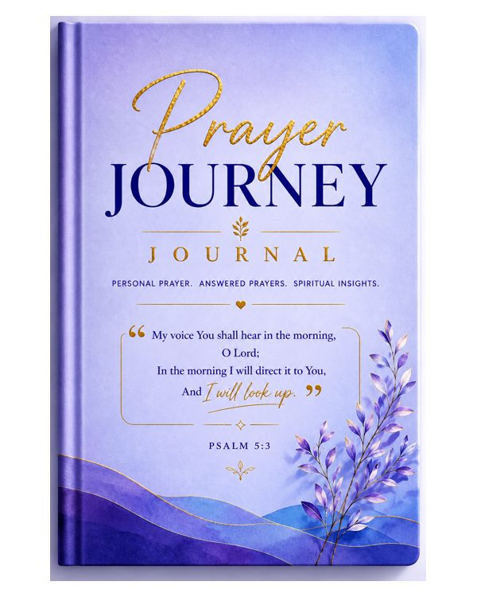

Fillable PDF journalPrayer Journey Journal – Lavender (Fillable PDF)
by Lucy Abella
Personal prayer. Answered prayers. Spiritual insights. Type your prayers straight into the PDF on your phone, tablet or computer, or print it and write by hand.
KES 500
Order on WhatsApp